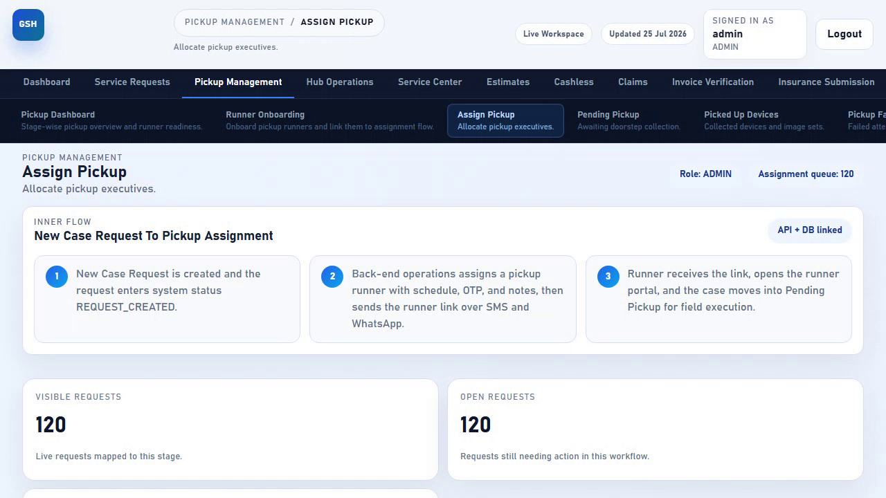
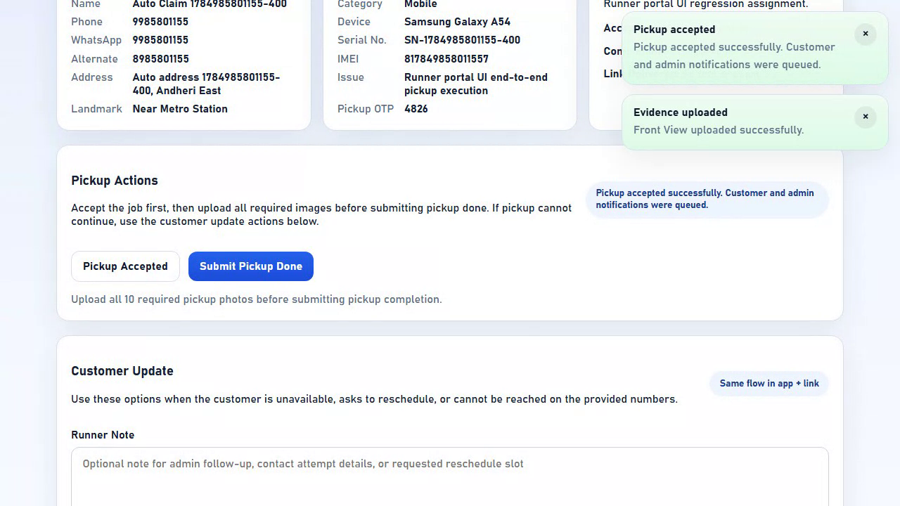
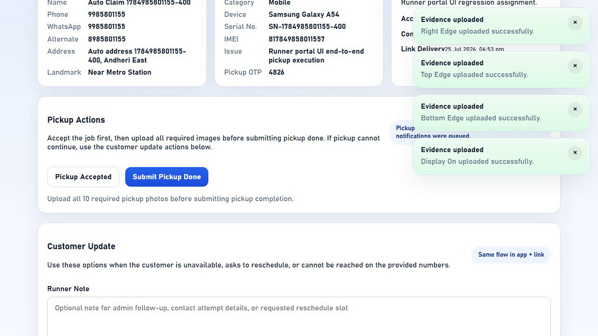
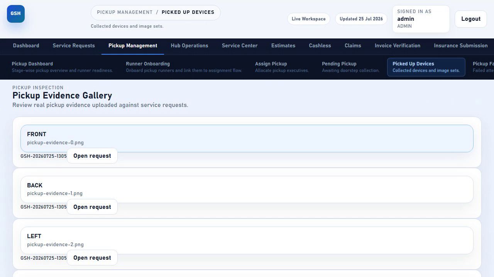

🛵 What is the Pickup Runner Flow?
When a customer books a device pickup, Gadget Seva Hub assigns the job to a Pickup Runner (the field executive who physically visits the customer). The runner never needs to log into the admin console — they get a single link by SMS and WhatsApp that opens a focused, mobile-friendly portal for that one job.
Key Highlights
- No separate app install needed — works as a plain mobile web page
- One link per pickup — sent automatically the moment admin assigns the job
- 4-step guided flow: Accept → Upload 10 photos → Optional extras → Submit
- The "Submit Pickup Done" button only unlocks once all 10 required photos are uploaded — the app itself won't let a runner skip evidence
- Handles doorstep exceptions — customer not available, reschedule requests, unreachable numbers
- The moment pickup is marked done, the request instantly appears in the admin's Picked Up Devices board
🗺️ The 8 Stages at a Glance
Every chip above is a real click — by the runner on their phone, or by admin in the ops console — captured on video in one uninterrupted run. See the full journey recording further down this page.
👥 Who's Involved?
| Role | What they do | Needs login? |
|---|---|---|
| Admin / Operations | Onboards runners, assigns pickups with a schedule and OTP, monitors the pickup boards | Yes |
| Pickup Runner ("Pickup Boy") | Opens the SMS/WhatsApp link, accepts the job, photographs the device, submits pickup done | No (link-based) — optional login for the browser inbox |
| Customer | Hands over the device at the scheduled slot; confirms pickup OTP if asked | No |
🔐 Admin Side — Onboarding a Runner
Before any pickup can be assigned, the runner must exist in the system as a Pickup Agent user.
Go to /login with admin credentials.
Fill the runner's full name, mobile number, and optionally WhatsApp number, email, and username.
The runner is created with role PICKUP_AGENT and a default password pattern (Runner@ + last 4 digits of their mobile number), and instantly appears in the runner roster ready for assignment.

📋 Admin Side — Assigning a Pickup
Once a service request needs a pickup, admin allocates it to an available runner from the Assign Pickup board.
Every request awaiting pickup assignment appears here as a card.
Choose the pickup runner from the dropdown, set the scheduled pickup slot, and add any handoff notes.
The system generates a unique, secure runner link and a 4-digit pickup OTP, then queues the SMS + WhatsApp notification to the runner.

PICKUP_ASSIGNED.📲 Step 1 — Runner Opens the Link
The runner receives an SMS/WhatsApp message with a single link, e.g. /runner-access/<token>.
On a mobile device, it first tries to open the hybrid runner app (if installed).
If the app isn't installed (or on desktop), the page shows two buttons after ~1.4 seconds: "Open Direct Pickup Flow" and "Open Runner Inbox."
This opens the actual pickup execution screen for this specific job.

✅ Step 2 — Accept the Pickup
The runner portal shows the customer's name, phone, address, device details, and the pickup OTP — everything needed for the doorstep visit — with a 4-step progress tracker at the top.
Customer contact info, device category, issue summary, and the pickup OTP are all shown up front.
Confirms the runner has received and is acting on the assignment. The button changes to "Pickup Accepted" and locks.
Both the customer and admin receive a notification the moment acceptance is recorded.

📸 Step 3 — Upload the 10 Required Photos
Every pickup needs the same 10 angles of the device, captured live at the doorstep before handoff. Each slot has its own file picker with a camera-capture hint on mobile.
Opens the phone's camera or gallery. Slots can be filled in any order.
Each successful upload shows an instant "Uploaded successfully" confirmation and the progress counter increases.
The "Submit Pickup Done" button stays disabled until every required slot shows Uploaded.

Required Photo Checklist (10 total)
➕ Step 4 — Optional Extra Photos
After the 10 required photos, the runner can add up to 20 additional optional photos — for extra damage angles, doorstep context, or anything worth recording for audit support.
🏁 Step 5 — Submit Pickup Done
Once all 10 required photos show Uploaded, the "Submit Pickup Done" button becomes active.
The runner should only submit once they actually have the device in hand.
The button confirms with "Pickup marked complete. Customer and admin notifications were queued."
The device now moves into the hub intake pipeline for the operations team.
🚧 If the Customer Isn't Available
Not every doorstep visit goes smoothly. The same portal has a dedicated Customer Update panel for these situations — no photos or acceptance are required to use it.
| Option | When to use it |
|---|---|
| Customer Not Available | Runner reaches the location but the customer isn't there |
| Customer Reschedule | Customer asks for a different date/time |
| Customer Not Contactable | Runner cannot reach the customer on any provided number |
Any of these can include an optional note, and both the customer and admin are notified. Admin can then reassign the pickup for another attempt from the Assign Pickup board.
Runner Inbox module test — pickup delivered to the runner's inbox, a customer reschedule recorded, and the pickup reassigned by admin
🔐 Admin Side — Seeing the Completed Pickup
The instant the runner submits pickup done, the request appears in Pickup Management → Picked Up Devices with the full 10-photo evidence gallery attached.

📊 Status Reference
| Status | What it means | Who acts next |
|---|---|---|
| PICKUP_ASSIGNED | Runner link sent, awaiting acceptance | Runner accepts |
| PICKUP_IN_PROGRESS | Runner accepted, on the way / uploading photos | Runner completes |
| CUSTOMER_NOT_AVAILABLE / CUSTOMER_RESCHEDULED / CUSTOMER_NOT_CONTACTABLE | Doorstep exception reported by runner | Admin reassigns |
| PICKUP_COMPLETED | Device collected with all 10 photos | Hub team receives device |
Full Status Flow
🧪 How This Was Verified
This entire journey is covered by an automated end-to-end test — 11-runner-inbox.regression.spec.ts — that drives the real UI on both sides against the live UAT environment, not just API calls:
- Admin assigns a pickup through the real Assign Pickup board
- The test opens
/runner-access/<token>exactly as a runner's phone would - Clicks "Open Direct Pickup Flow" and lands on the real runner portal
- Clicks "Accept Pickup" and confirms the acceptance toast
- Uploads all 10 required evidence photos one at a time, confirming each one
- Clicks "Submit Pickup Done" and confirms completion
- Confirms the request now shows
PICKUP_COMPLETEDvia the API - Opens the admin's Picked Up Devices board and confirms the request is visible there
🎥 Video — Full Pickup Runner Journey
Complete recorded walkthrough of the automated test above: admin assigning the pickup, the runner opening the link, accepting, uploading all 10 photos, submitting pickup done, and admin confirming the completed pickup — all in one continuous run against the live UAT environment.